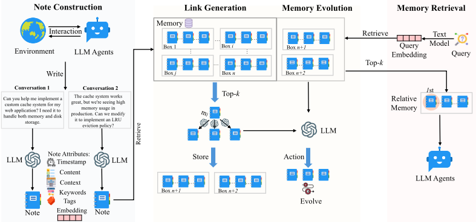
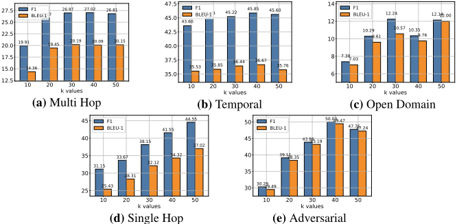
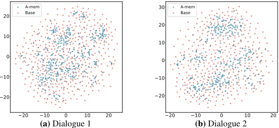
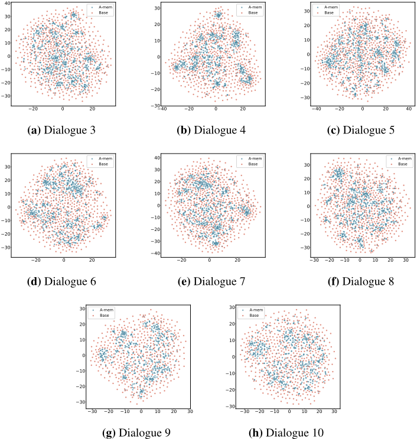

A-MEM：面向 LLM Agent 的 Agentic 记忆系统
现有 LLM Agent 记忆系统多依赖预定义存储结构与固定读写流程，难以在长期交互中灵活组织知识。A-MEM 借鉴 Zettelkasten 卡片盒笔记法，为每条新记忆生成含关键词、标签、上下文描述的结构化笔记与向量表示，先以 embedding 召回 top-k 候选、再由 LLM 判断建立记忆间链接，并在新记忆写入时触发对历史记忆上下文与标签的演化更新，形成自组织的知识网络。在 LoCoMo 与 DialSim 长对话 QA 基准上，A-MEM 在六个基础模型上整体优于 MemoryBank、MemGPT 等基线，Multi-Hop 推理提升最显著（GPT-4o-mini 上 ROUGE-L 44.27 对 LoCoMo 的 18.09）。同时每次记忆操作约 1,200 tokens，较基线降低 85-93%，单次成本低于 $0.0003，百万级记忆检索时间仅 3.70µs。论文开源了评测代码与生产级实现及全部提示模板，可直接作为团队 Agent 记忆模块的参考方案。
现有 LLM Agent 记忆系统仅提供基础的存储与检索功能，要求开发者预定义存储结构、指定工作流中的存储点与检索时机；即便引入图数据库（如 Mem0）也依赖预定义 schema 与关系，限制了适应性——当 Agent 学到新知识时只能在预设框架内归类链接，无法随知识演化建立新连接或形成新组织模式，导致跨新环境泛化差、长期交互效果受限。
提出受 Zettelkasten 方法启发的 agentic 记忆系统 A-MEM，包含四个环节：(1) Note Construction：用 LLM 按模板为每条交互生成关键词、标签、上下文描述等结构化属性，并用文本编码器（all-minilm-l6-v2）计算稠密向量；(2) Link Generation：先用 embedding 相似度召回 top-k 候选作为初筛，再由 LLM 基于共同属性分析决定是否建立链接；(3) Memory Evolution：新记忆写入时可触发对邻居记忆的 context、keywords、tags 更新，使记忆网络随交互持续演化；(4) 检索阶段用查询向量与余弦相似度取 top-k 记忆构造上下文提示。整个流程不依赖预定义的记忆操作与静态结构。
DialSim 数据集上 F1 达 3.45，较 LoCoMo 的 2.55 提升 35%，较 MemGPT 的 1.18 高 192%
LoCoMo 上非 GPT 模型全类别一致超越所有基线；GPT 模型上 Multi-Hop 任务性能至少翻倍（GPT-4o-mini 上 ROUGE-L 44.27 对 LoCoMo 18.09，METEOR 23.43 对 7.61，SBERT 70.49 对 52.30）
Qwen2.5-15B 的 Multi-Hop ROUGE-L 达 27.23，约为 LoCoMo（4.68）与 ReadAgent（2.81）的六倍
每次记忆操作约 1,200 tokens，较基线（LoCoMo/MemGPT 的 16,900 tokens）降低 85-93%，单次成本低于 $0.0003；GPT-4o-mini 平均处理 5.4 秒，本地 Llama 3.2 1B 仅 1.1 秒
扩展性：空间复杂度 O(N) 与基线相同，无额外存储开销；100 万条记忆时检索时间仅从 0.31µs 增至 3.70µs
消融实验：移除 Link Generation 与 Memory Evolution 模块后性能显著下降，尤其在 Multi Hop 与 Open Domain 任务；检索参数 k 增大带来的收益在超过阈值后趋于平台甚至略降
与 MemGPT、MemoryBank 等依赖预定义结构/固定流程的记忆系统，以及 Mem0 等依赖图数据库预定义 schema 的方案不同，A-MEM 不依赖静态预定操作，而是让记忆通过 LLM 自主生成上下文描述、自主建立链接，并随新记忆写入演化更新历史记忆的内容与关系；与 agentic RAG 的区别在于其 agency 体现在存储与演化层面而非检索层面——agentic RAG 的知识库仍是静态的，而 A-MEM 的记忆网络会持续自我精炼。
相关度级别：high
命中能力域：3.1 上下文工程与记忆 | 3.3 Agent 架构与工具使用 | 3.5 评测与可靠使用
理由：论文主题'Agent 记忆系统'直接命中 3.1 域的核心条目（Agent 记忆系统、结构化上下文组织、RAG/检索增强），其记忆子系统作为 Agent harness 的组成部分与 3.3 相关；论文给出的 LoCoMo/DialSim 多类别评测方法与 token 成本、检索延迟分析对应 3.5 的评测方法与成本效率优化。团队构建知识库问答、代码 Agent 等需要跨会话积累经验的工具时，如何组织与演化长期上下文是核心痛点，该论文提供了带开源实现与提示模板的可复用方案。
建议动作：深入精读并做内部分享
arXiv:2502.12110v11 [cs.CL] 2025年10月8日
Wujiang Xu 1 , Zujie Liang 2 , Kai Mei 1 , Hang Gao 1 , Juntao Tan 1 , Yongfeng Zhang 1 , 3
1 罗格斯大学
2 独立研究者 3 AIOS 基金会 wujiang.xu@rutgers.edu
尽管大语言模型（LLM）智能体能够有效地使用外部工具完成复杂的现实世界任务，但它们需要记忆系统来利用历史经验。当前的记忆系统能够实现基本的存储与检索，但缺乏精细的记忆组织，尽管近期已有尝试引入图数据库。此外，这些系统固定的操作与结构限制了其在多样化任务中的适应性。为解决这一局限，本文提出了一种新颖的面向 LLM 智能体的智能体化记忆（agentic memory）系统，能够以智能体化的方式动态组织记忆。遵循卡片盒笔记法（Zettelkasten）的基本原则，我们设计了该记忆系统，通过动态索引与链接构建相互连接的知识网络。当添加新记忆时，我们会生成一条包含多种结构化属性的综合笔记，包括上下文描述、关键词和标签。随后，系统分析历史记忆以识别相关连接，并在存在有意义相似性的记忆之间建立链接。此外，这一过程还支持记忆演化——随着新记忆的整合，它们可以触发对既有历史记忆的上下文表示和属性的更新，使记忆网络能够持续完善其理解。我们的方法将 Zettelkasten 的结构化组织原则与智能体驱动决策的灵活性相结合，实现了更具适应性和上下文感知能力的记忆管理。在六个基础模型上的实证实验表明，相较于现有最先进（SOTA）基线，本方法取得了显著更优的提升。
基准测试（Benchmark）评估代码：
https://github.com/WujiangXu/AgenticMemory
面向生产环境的智能体化记忆代码
https://github.com/WujiangXu/A-mem-sys
Large Language Model (LLM) agents have demonstrated remarkable capabilities in various tasks, with recent advances enabling them to interact with environments, execute tasks, and make decisions autonomously [23, 33, 7]. They integrate LLMs with external tools and delicate workflows to improve reasoning and planning abilities. Though LLM agent has strong reasoning performance, it still needs a memory system to provide long-term interaction ability with the external environment [35].
Existing memory systems [25, 39, 28, 21] for LLM agents provide basic memory storage functionality. These systems require agent developers to predefine memory storage structures, specify storage points within the workflow, and establish retrieval timing. Meanwhile, to improve structured memory organization, Mem0 [8], following the principles of RAG [9, 18, 30], incorporates graph databases for storage and retrieval processes. While graph databases provide structured organization for memory systems, their reliance on predefined schemas and relationships fundamentally limits their adaptability. This limitation manifests clearly in practical scenarios - when an agent learns a novel mathematical solution, current systems can only categorize and link this information within their preset framework,
:
Preprint.
unable to forge innovative connections or develop new organizational patterns as knowledge evolves. Such rigid structures, coupled with fixed agent workflows, severely restrict these systems' ability to generalize across new environments and maintain effectiveness in long-term interactions. The challenge becomes increasingly critical as LLM agents tackle more complex, open-ended tasks, where flexible knowledge organization and continuous adaptation are essential. Therefore, how to design a flexible and universal memory system that supports LLM agents' long-term interactions remains a crucial challenge.
本文提出了一种名为 A-MEM 的新型智能体化记忆系统，面向大语言模型（LLM）智能体，使其能够在不依赖静态、预先确定的记忆操作的情况下实现动态记忆结构化。我们的方法受到 Zettelkasten 方法 [15, 1] 的启发，这是一种精巧的知识管理系统，通过原子笔记和灵活的链接机制构建相互关联的信息网络。我们的系统引入了一种智能体化记忆架构，为 LLM 智能体提供自主且灵活的记忆管理。对于每条新记忆，我们构建综合性的笔记，其中整合了多种表示形式：包括若干属性的结构化文本属性，以及用于相似性匹配的嵌入向量。随后，A-MEM 分析历史记忆库，基于语义相似性和共享属性建立有意义的连接。这一整合过程不仅创建新的链接，还能实现动态演化——当新记忆被纳入时，它们可以触发对现有记忆上下文表示的更新，从而使整个记忆体系能够随时间推移不断细化并深化其理解。贡献总结如下：
针对大语言模型（LLM）Agent 记忆系统的先前研究已经探索了多种记忆管理与利用机制 [23, 21, 8, 39]。一些方法实现了完整的交互存储，通过稠密检索模型 [39] 或读写记忆结构 [24] 来维护全面的历史记录。此外，MemGPT [25] 利用类缓存架构来优先处理近期信息。类似地，SCM [32] 提出了一种自控记忆（Self-Controlled Memory）框架，通过记忆流和控制器机制增强 LLM 维护长期记忆的能力。然而，这些方法在处理多样化的现实世界任务时面临显著局限。尽管它们能够提供基本的记忆功能，但其操作通常受限于预定义的结构和固定的工作流程。这些约束源于它们对僵化操作模式的依赖，尤其是在记忆写入和检索过程中。这种不灵活性导致在新环境中的泛化能力较差，并且在长期交互中效果有限。因此，设计一个支持 Agent 长期交互的灵活且通用的记忆系统仍然是一项关键挑战。
2

我们提出的 Agentic Memory（智能体记忆）系统借鉴了卡片盒笔记法（Zettelkasten），实现了一个动态且自我演化的记忆系统，使 LLM Agent 能够在无需预定操作的情况下维持长期记忆。该系统的设计强调原子化笔记、灵活的链接机制以及知识结构的持续演化。
3
在卡片盒笔记法（Zettelkasten）原子化笔记与灵活组织原则的基础上，我们引入一种由 LLM 驱动的记忆笔记构建方法。当 Agent 与其环境交互时，我们构建结构化的记忆笔记，以同时捕获显式信息和 LLM 生成的上下文理解。在我们的集合 M = { m 1 , m 2 , ..., m N } 中，每条记忆笔记 m i 表示为：
其中 c i 表示原始交互内容，t i 是交互的时间戳，K i 表示用于捕获关键概念的 LLM 生成关键词，G i 包含用于分类的 LLM 生成标签，X i 表示提供丰富语义理解的 LLM 生成上下文描述，L i 则维护着共享语义关系的关联记忆集合。为了在基本内容和时间戳之外为每条记忆笔记赋予有意义的上下文，我们利用 LLM 对交互进行分析并生成这些语义组件。笔记构建过程包括使用精心设计的模板 P s 1 对 LLM 进行提示：
遵循 Zettelkasten 的原子性原则，每条笔记捕获一个单一且自包含的知识单元。为实现高效的检索与链接，我们通过文本编码器 [27] 计算稠密向量表示，该表示封装了笔记的所有文本组件：
通过使用 LLM 生成增强组件，我们能够从原始交互中自主提取隐含知识。多层面的笔记结构 ( K i , G i , X i ) 构建了能够捕获记忆不同侧面的丰富表示，从而支持精细化的组织与检索。此外，LLM 生成的语义组件与稠密向量表示相结合，既提供了上下文，又实现了计算高效的相似度匹配。
我们的系统实现了一种自主链接生成机制，使新的记忆笔记能够在没有预定义规则的情况下形成有意义的连接。当构建的记忆笔记 m n 被添加到系统中时，我们首先利用其语义嵌入进行基于相似度的检索。对于每个已有的记忆笔记 m j ∈ M，我们计算相似度得分：
随后，系统识别出 topk 个最相关的记忆：
基于这些候选的最近邻记忆，我们提示 LLM 根据它们潜在的共同属性分析可能的连接。形式化地，记忆 m n 的链接集合更新如下：
每个生成的链接 l i 的结构为：L i = { m i , ..., m k }。通过将基于嵌入的检索用作初始过滤器，我们在保持语义相关性的同时实现了高效的可扩展性。即使在大规模记忆集合中，A-MEM 也能快速识别潜在连接，而无需进行穷举比较。更重要的是，LLM 驱动的分析能够对关系进行细致入微的理解，超越了简单的相似度度量。语言模型可以识别仅凭嵌入相似度可能不明显的细微模式、因果关系和概念性连接。我们在利用现代语言模型的同时实现了 Zettelkasten 的灵活链接原则。由此产生的网络从记忆内容和上下文中有机地涌现，实现了自然的知识组织。
在为新记忆创建链接之后，A-MEM 会根据检索到的记忆的文本信息及其与新记忆的关系，对这些记忆进行演化。对于最近邻集合 M n near 中的每条记忆 m j，系统会判断是否更新其上下文、关键词和标签。这一演化过程可以形式化地表示为：
4
演化后的记忆 m ∗ j 随后取代记忆集合 M 中的原始记忆 m j。这种演化方式支持持续更新和建立新的连接，模拟了人类的学习过程。随着系统随时间推移处理更多记忆，它会发展出日益精细的知识结构，在多条记忆之间发现更高阶的模式与概念。这为自主记忆学习奠定了基础，通过新经验与既有记忆之间的持续交互，知识组织将逐步变得更加丰富。
在每次交互中，我们的 A-MEM 执行上下文感知的记忆检索，为 Agent 提供相关的历史信息。给定来自当前交互的查询文本 q，我们首先使用与记忆笔记相同的文本编码器计算其稠密向量表示：
随后，系统使用余弦相似度计算查询嵌入与 M 中所有已有记忆笔记之间的相似度得分：
然后，我们从历史记忆存储中检索出 k 条最相关的记忆，以构建符合上下文的提示。
这些检索到的记忆提供了相关的历史上下文，帮助 Agent 更好地理解并响应当前交互。检索到的上下文通过将当前交互与记忆系统中存储的相关过往经验相连接，丰富了 Agent 的推理过程。
为了评估指令感知推荐（instruction-aware recommendation）在长期对话中的有效性，我们使用了 LoCoMo 数据集 [22]，与现有对话数据集 [36, 13] 相比，它包含的对话明显更长。以往的数据集所包含的对话约为 1K token，分布在 4-5 个会话中，而 LoCoMo 的对话则长得多，平均达 9K token，最多跨越 35 个会话，这使其特别适合评估模型处理长程依赖以及在长对话中保持一致性的能力。LoCoMo 数据集包含多种问题类型，旨在全面评估模型理解的不同方面：(1) 单跳问题（single-hop questions），可从单个会话中得出答案；(2) 多跳问题（multihop questions），需要跨会话综合信息；(3) 时序推理问题（temporal reasoning questions），测试对时间相关信息的理解；(4) 开放领域知识问题（open-domain knowledge questions），需要将对话上下文与外部知识相结合；以及 (5) 对抗性问题（adversarial questions），评估模型识别无法回答的查询的能力。LoCoMo 在这些类别中总共包含 7,512 个问答对。此外，我们使用一个名为 DialSim [16] 的新数据集来评估我们记忆系统的有效性。它是一个源自长期多方对话的问答数据集。该数据集取材于热门电视剧（《老友记》（Friends）、《生活大爆炸》（The Big Bang Theory）和《办公室》（The Office）），涵盖跨越五年的 1,300 个会话，包含约 350,000 个 token，其中包括每个会话超过 1,000 个问题，这些问题来自经过整理的影迷问答网站问题以及由时序知识图谱生成的复杂问题。
在对比基线（baseline）方面，我们与 LoCoMo [22]、ReadAgent [17]、MemoryBank [39] 和 MemGPT [25] 进行了比较。基线的详细介绍见附录 A.1。在评估方面，我们采用两个主要指标：F1 分数，通过平衡精确率（precision）与召回率（recall）来评估答案的准确性；以及 BLEU-1 [26]，通过测量生成回复与真实回复（ground truth）之间的词重叠来评估生成回复的质量。此外，我们还报告了回答一个问题所需的平均 token 长度。除了报告采用四个额外指标（ROUGE-L、ROUGE-2、METEOR 和 SBERT Similarity）的实验结果外，我们还在附录 A.3 中给出了使用不同基础模型（包括 DeepSeek-R1-32B [11]、Claude 3.0 Haiku [2] 和 Claude 3.5 Haiku [3]）的实验结果。
5
| Model.Model | Method.Method | Category.Multi Hop.F1 | Category.Multi Hop.BLEU | Category.Temporal.F1 | Category.Temporal.BLEU | Category.Open Domain.F1 | Category.Open Domain.BLEU | Category.Single Hop.F1 | Category.Single Hop.BLEU | Category.Adversial.F1 | Category.Adversial.BLEU | Average.Ranking.F1 | Average.Ranking.BLEU | Average.Token Length. |
|---|---|---|---|---|---|---|---|---|---|---|---|---|---|---|
| 4o-mini | LOCOMO | 25.02 | 19.75 | 18.41 | 14.77 | 12.04 | 11.16 | 40.36 | 29.05 | 69.23 | 68.75 | 2.4 | 2.4 | 16,910 |
| 4o-mini | READAGENT | 9.15 | 6.48 | 12.6 | 8.87 | 5.31 | 5.12 | 9.67 | 7.66 | 9.81 | 9.02 | 4.2 | 4.2 | 643 |
| 4o-mini | MEMORYBANK | 5 | 4.77 | 9.68 | 6.99 | 5.56 | 5.94 | 6.61 | 5.16 | 7.36 | 6.48 | 4.8 | 4.8 | 432 |
| 4o-mini | MEMGPT | 26.65 | 17.72 | 25.52 | 19.44 | 9.15 | 7.44 | 41.04 | 34.34 | 43.29 | 42.73 | 2.4 | 2.4 | 16,977 |
| 4o-mini | GPT A-MEM | 27.02 | 20.09 | 45.85 | 36.67 | 12.14 | 12 | 44.65 | 37.06 | 50.03 | 49.47 | 1.2 | 1.2 | 2,520 |
| 4o | LOCOMO | 28 | 18.47 | 9.09 | 5.78 | 16.47 | 14.8 | 61.56 | 54.19 | 52.61 | 51.13 | 2 | 2 | 16,910 |
| 4o | READAGENT | 14.61 | 9.95 | 4.16 | 3.19 | 8.84 | 8.37 | 12.46 | 10.29 | 6.81 | 6.13 | 4 | 4 | 805 |
| 4o | MEMORYBANK | 6.49 | 4.69 | 2.47 | 2.43 | 6.43 | 5.3 | 8.28 | 7.1 | 4.42 | 3.67 | 5 | 5 | 569 |
| 4o | MEMGPT | 30.36 | 22.83 | 17.29 | 13.18 | 12.24 | 11.87 | 60.16 | 53.35 | 34.96 | 34.25 | 2.4 | 2.4 | 16,987 |
| 4o | A-MEM | 32.86 | 23.76 | 39.41 | 31.23 | 17.1 | 15.84 | 48.43 | 42.97 | 36.35 | 35.53 | 1.6 | 1.6 | 1,216 |
| 1.5b | LOCOMO | 9.05 | 6.55 | 4.25 | 4.04 | 9.91 | 8.5 | 11.15 | 8.67 | 40.38 | 40.23 | 3.4 | 3.4 | 16,910 |
| 1.5b | READAGENT | 6.61 | 4.93 | 2.55 | 2.51 | 5.31 | 12.24 | 10.13 | 7.54 | 5.42 | 27.32 | 4.6 | 4.6 | 752 |
| 1.5b | MEMORYBANK | 11.14 | 8.25 | 4.46 | 2.87 | 8.05 | 6.21 | 13.42 | 11.01 | 36.76 | 34 | 2.6 | 2.6 | 284 |
| 1.5b | MEMGPT | 10.44 | 7.61 | 4.21 | 3.89 | 13.42 | 11.64 | 9.56 | 7.34 | 31.51 | 28.9 | 3.4 | 3.4 | 16,953 |
| 1.5b | Qwen2.5 A-MEM | 18.23 | 11.94 | 24.32 | 19.74 | 16.48 | 14.31 | 23.63 | 19.23 | 46 | 43.26 | 1 | 1 | 1,300 |
| 3b | LOCOMO | 4.61 | 4.29 | 3.11 | 2.71 | 4.55 | 5.97 | 7.03 | 5.69 | 16.95 | 14.81 | 3.2 | 3.2 | 16,910 |
| 3b | READAGENT | 2.47 | 1.78 | 3.01 | 3.01 | 5.57 | 5.22 | 3.25 | 2.51 | 15.78 | 14.01 | 4.2 | 4.2 | 776 |
| 3b | MEMORYBANK | 3.6 | 3.39 | 1.72 | 1.97 | 6.63 | 6.58 | 4.11 | 3.32 | 13.07 | 10.3 | 4.2 | 4.2 | 298 |
| 3b | MEMGPT | 5.07 | 4.31 | 2.94 | 2.95 | 7.04 | 7.1 | 7.26 | 5.52 | 14.47 | 12.39 | 2.4 | 2.4 | 16,961 |
| 3b | A-MEM | 12.57 | 9.01 | 27.59 | 25.07 | 7.12 | 7.28 | 17.23 | 13.12 | 27.91 | 25.15 | 1 | 1 | 1,137 |
| 1b | LOCOMO | 11.25 | 9.18 | 7.38 | 6.82 | 11.9 | 10.38 | 12.86 | 10.5 | 51.89 | 48.27 | 3.4 | 3.4 | 16,910 |
| 1b | READAGENT | 5.96 | 5.12 | 1.93 | 2.3 | 12.46 | 11.17 | 7.75 | 6.03 | 44.64 | 40.15 | 4.6 | 4.6 | 665 |
| 1b | MEMORYBANK | 13.18 | 10.03 | 7.61 | 6.27 | 15.78 | 12.94 | 17.3 | 14.03 | 52.61 | 47.53 | 2 | 2 | 274 |
| 1b | 3.2 MEMGPT | 9.19 | 6.96 | 4.02 | 4.79 | 11.14 | 8.24 | 10.16 | 7.68 | 49.75 | 45.11 | 4 | 4 | 16,950 |
| 1b | A-MEM | 19.06 | 11.71 | 17.8 | 10.28 | 17.55 | 14.67 | 28.51 | 24.13 | 58.81 | 54.28 | 1 | 1 | 1,376 |
| Llama LOCOMO | 6.88 | 5.77 | 4.37 | 4.4 | 10.65 | 9.29 | 8.37 | 6.93 | 30.25 | 28.46 | 2.8 | 2.8 | 16,910 | |
| READAGENT | 2.47 | 1.78 | 3.01 | 3.01 | 5.57 | 5.22 | 3.25 | 2.51 | 15.78 | 14.01 | 4.2 | 4.2 | 461 | |
| 3b MEMORYBANK | 6.19 | 4.47 | 3.49 | 3.13 | 4.07 | 4.57 | 7.61 | 6.03 | 18.65 | 17.05 | 3.2 | 3.2 | 263 | |
| MEMGPT | 5.32 | 3.99 | 2.68 | 2.72 | 5.64 | 5.54 | 4.32 | 3.51 | 21.45 | 19.37 | 3.8 | 3.8 | 16,956 | |
| A-MEM | 17.44 | 11.74 | 26.38 | 19.5 | 12.53 | 11.83 | 28.14 | 23.87 | 42.04 | 40.6 | 1 | 1 | 1,126 |
| Model.Model | Method.Method | Category.Multi Hop.F1 | Category.Multi Hop.BLEU | Category.Temporal.F1 | Category.Temporal.BLEU | Category.Open Domain.F1 | Category.Open Domain.BLEU | Category.Single Hop.F1 | Category.Single Hop.BLEU | Category.Adversial.F1 | Category.Adversial.BLEU | Average.Ranking.F1 | Average.Ranking.BLEU | Average.Token Length. |
对于所有基线方法与我们提出的方法，我们均采用相同的系统提示（system prompts）以保证一致性，具体内容详见附录 B。Qwen-1.5B/3B 与 Llama 3.2 1B/3B 模型通过 Ollama 1 进行本地实例化部署，并由 LiteLLM 2 负责管理结构化输出生成。对于 GPT 模型，我们使用官方的结构化输出 API。在记忆检索过程中，我们主要采用 k = 10 进行 top-k 记忆选择以保持计算效率，同时针对特定类别调整该参数以优化性能。k 的详细配置见附录 A.5。在文本嵌入方面，我们在所有实验中均采用 all-minilm-l6-v2 模型。
性能分析。在实证评估中，我们在 LoCoMo 数据集上将 A-MEM 与四个具有竞争力的基线方法进行了比较，包括 LoCoMo [22]、ReadAgent [17]、MemoryBank [39] 和 MemGPT [25]。对于非 GPT 基础模型，我们的 A-MEM 在不同类别上均持续优于所有基线方法，证明了我们智能体记忆（agentic memory）方法的有效性。对于基于 GPT 的模型，虽然 LoCoMo 和 MemGPT 在开放领域（Open Domain）和对抗（Adversarial）任务等某些类别中表现出色——这得益于其在简单事实检索方面强大的预训练知识——但我们的 A-MEM 在需要复杂推理链的多跳（Multi-Hop）任务中展现出更优的性能，取得了至少两倍于基线的性能。除了在 LoCoMo 数据集上的实验外，我们还在 DialSim 数据集上将我们的方法与 LoCoMo 和 MemGPT 进行了比较。A-MEM 在各项评估指标上均持续优于所有基线方法，取得了 F1
1 https://github.com/ollama/ollama
2 https://github.com/BerriAI/litellm
| Method | F1 | BLEU-1 | ROUGE-L | ROUGE-2 | METEOR | SBERT Similarity |
|---|---|---|---|---|---|---|
| LoCoMo | 2.55 | 3.13 | 2.75 | 0.9 | 1.64 | 15.76 |
| MemGPT | 1.18 | 1.07 | 0.96 | 0.42 | 0.95 | 8.54 |
| A-MEM | 3.45 | 3.37 | 3.54 | 3.6 | 2.05 | 19.51 |
| Method | F1 | BLEU-1 | ROUGE-L | ROUGE-2 | METEOR | SBERT Similarity |
| Method. | Category.Multi Hop.F1 | Category.Multi Hop.BLEU-1 | Category.Temporal.F1 | Category.Temporal.BLEU-1 | Category.Open Domain.F1 | Category.Open Domain.BLEU-1 | Category.Single Hop.F1 | Category.Single Hop.BLEU-1 | Category.Adversial.F1 | Category.Adversial.BLEU-1 |
|---|---|---|---|---|---|---|---|---|---|---|
| w/oLG&ME | 9.65 | 7.09 | 24.55 | 19.48 | 7.77 | 6.7 | 13.28 | 10.3 | 15.32 | 18.02 |
| w/o ME | 21.35 | 15.13 | 31.24 | 27.31 | 10.13 | 10.85 | 39.17 | 34.7 | 44.16 | 45.33 |
| A-MEM | 27.02 | 20.09 | 45.85 | 36.67 | 12.14 | 12 | 44.65 | 37.06 | 50.03 | 49.47 |
| Method. | Category.Multi Hop.F1 | Category.Multi Hop.BLEU-1 | Category.Temporal.F1 | Category.Temporal.BLEU-1 | Category.Open Domain.F1 | Category.Open Domain.BLEU-1 | Category.Single Hop.F1 | Category.Single Hop.BLEU-1 | Category.Adversial.F1 | Category.Adversial.BLEU-1 |
分数为 3.45（相比 LoCoMo 的 2.55 提升了 35%，比 MemGPT 的 1.18 高出 192%）。A-MEM 的有效性源于其新颖的智能体记忆架构，该架构支持动态且结构化的记忆管理。与采用静态记忆操作的传统方法不同，我们的系统通过带有丰富上下文描述的原子笔记构建互连的记忆网络，从而实现更有效的多跳推理。该系统能够基于共享属性在记忆之间动态建立连接，并利用新的上下文信息持续更新现有记忆描述，这使其能够更好地捕获和利用不同信息片段之间的关系。
成本效率分析。A-MEM 在展现强大性能的同时，还表现出显著的计算与成本效率。该系统每次记忆操作约需 1,200 个 token，通过我们的选择性 top-k 检索机制，与基线方法（LoCoMo 和 MemGPT 需 16,900 个 token）相比，token 使用量减少了 85-93%。这一大幅度的 token 缩减直接转化为更低的运营成本——使用商业 API 服务时，每次记忆操作的成本低于 0.0003 美元，使大规模部署在经济上切实可行。使用 GPT-4o-mini 时，处理时间平均为 5.4 秒；而在单块 GPU 上使用本地部署的 Llama 3.2 1B 时，处理时间仅为 1.1 秒。尽管在记忆处理过程中需要多次 LLM 调用，A-MEM 仍保持了这种高性价比的资源利用，并在所有受测基础模型上持续优于基线方法，尤其是在复杂的多跳推理任务上将性能提升了一倍。这种低计算成本与卓越推理能力之间的平衡，凸显了 A-MEM 在现实世界部署中的实用优势。
为了评估链接生成（Link Generation, LG）模块与记忆演化（Memory Evolution, ME）模块的有效性，我们通过系统地移除模型的关键组件来开展消融实验。当 LG 和 ME 模块均被移除时，系统表现出显著的性能下降，尤其是在多跳推理（Multi Hop）和开放域（Open Domain）任务中。仅启用 LG 的系统（w/o ME）表现出中等水平的性能，其结果显著优于同时移除两个模块的版本，这证明了链接生成在建立记忆连接方面的基础性重要作用。我们的完整模型 A-MEM 在所有评估类别中始终取得最佳性能，在复杂推理任务中的表现尤为突出。这些结果表明，链接生成模块是记忆组织的关键基础，而记忆演化模块则对记忆结构提供了必要的精细化改进。消融实验验证了我们的架构设计选择，并凸显了这两个模块在构建有效记忆系统方面的互补特性。
我们进行了大量实验，以分析记忆检索参数 k 的影响，该参数控制每次交互所检索的相关记忆的数量。如图 3 所示，我们以 GPT-4o-mini 作为基础模型，在五类任务上评估了不同 k 值（10、20、30、40、50）下的性能。结果揭示出一个有趣的模式：虽然增大 k 通常会带来性能提升，但这种提升会逐渐趋于平缓，在较高取值时有时甚至会略有下降。这一趋势在 Multi Hop 和 Open Domain 任务中尤为明显。这一观察表明记忆检索中存在一种微妙的平衡——较大的 k 值虽然能为推理提供更丰富的历史上下文，但也可能引入噪声，并挑战模型有效处理更长序列的能力。我们的分析表明，适中的 k 值能够在上下文丰富性与信息处理效率之间取得最佳平衡。
7

| Memory Size | Method | Memory Usage (MB) | Retrieval Time ( µ s) |
|---|---|---|---|
| 1,000 | A-MEM MemoryBank [39] ReadAgent [17] | 1.46 1.46 1.46 | 0.31 ± 0.30 0.24 ± 0.20 43.62 ± 8.47 |
| 10,000 | A-MEM MemoryBank [39] ReadAgent [17] | 14.65 14.65 14.65 | 0.38 ± 0.25 0.26 ± 0.13 484.45 ± 93.86 |
| 100,000 | A-MEM MemoryBank [39] ReadAgent [17] | 146.48 146.48 146.48 | 1.40 ± 0.49 0.78 ± 0.26 6,682.22 ± 111.63 |
| 1,000,000 | A-MEM MemoryBank [39] ReadAgent [17] | 1464.84 1464.84 1464.84 | 3.70 ± 0.74 1.91 ± 0.31 120,069.68 ± 1,673.39 |
| Memory Size | Method | Memory Usage (MB) | Retrieval Time ( µ s) |
为了评估记忆不断累积情况下的存储开销，我们考察了 A-MEM 系统与两种基线方法——MemoryBank [39] 和 ReadAgent [17]——在存储规模与检索时间之间的关系。我们在四个规模点上使用相同的记忆内容对这三种记忆系统进行了评估，每一步将条目数量增加 10 倍（从 1,000 条增加到 10,000 条、100,000 条，最终达到 1,000,000 条）。实验结果揭示了 A-MEM 系统扩展特性的几项关键洞察：在空间复杂度方面，三种系统均表现出相同的线性内存使用增长（O(N)），这符合基于向量的检索系统的预期。这证实了 A-MEM 相比基线方法没有引入额外的存储开销。在检索时间方面，A-MEM 展现出优异的效率，随着记忆规模的增长，检索时间仅有极小的增加。即使扩展到 100 万条记忆，A-MEM 的检索时间也仅从 0.31 µs 增加到 3.70 µs，表现出卓越的性能。虽然 MemoryBank 的检索时间略快，但 A-MEM 在提供更丰富的记忆表示和功能的同时，保持了相当的性能。基于空间复杂度和检索时间的分析，我们得出结论：A-MEM 的检索机制即使在大规模下也能保持优异的效率。检索时间在不同记忆规模下的极小增长，解决了人们对大规模记忆系统效率的担忧，表明 A-MEM 为长期对话管理提供了一种高度可扩展的解决方案。这种效率、可扩展性与增强记忆能力的独特结合，使 A-MEM 成为构建面向 LLM Agent 的强大长期记忆机制方面的一项重要进展。

We present the t-SNE visualization in Figure 4 of memory embeddings to demonstrate the structural advantages of our agentic memory system. Analyzing two dialogues sampled from long-term conversations in LoCoMo [22], we observe that A-MEM (shown in blue) consistently exhibits more coherent clustering patterns compared to the baseline system (shown in red). This structural organization is particularly evident in Dialogue 2, where well-defined clusters emerge in the central region, providing empirical evidence for the effectiveness of our memory evolution mechanism and contextual description generation. In contrast, the baseline memory embeddings display a more dispersed distribution, demonstrating that memories lack structural organization without our link generation and memory evolution components. These visualization results validate that A-MEM can autonomously maintain meaningful memory structures through dynamic evolution and linking mechanisms. More results can be seen in Appendix A.4.
在本工作中，我们提出了 A-MEM，这是一种新颖的 Agentic 记忆系统，使大语言模型（LLM）Agent 能够在无需依赖预定义结构的情况下动态地组织和演化其记忆。受 Zettelkasten 方法的启发，我们的系统通过能够适应多样化真实世界任务的动态索引与链接机制，构建了一个相互连接的知识网络。该系统的核心架构具备以下特点：自主为新记忆生成上下文描述，并基于共享属性智能地建立与现有记忆之间的连接。此外，我们的方法通过融入新经验并在持续交互中发展高阶属性，实现历史记忆的持续演化。通过在六个基础模型上开展的大量实证评估，我们证明了 A-MEM 在长期对话任务中相比现有最先进的基线方法取得了更优的性能。可视化分析进一步验证了我们的记忆组织方法的有效性。这些结果表明，Agentic 记忆系统能够显著增强 LLM Agent 在复杂环境中利用长期知识的能力。
尽管我们的 Agentic 记忆系统取得了令人鼓舞的成果，但我们承认仍有若干值得未来探索的方向。首先，尽管我们的系统能够动态地组织记忆，但这些组织的质量仍可能受到底层语言模型固有能力的影响。不同的 LLM 可能会生成略有差异的上下文描述，或在记忆之间建立不同的连接。此外，虽然我们当前的实现侧重于基于文本的交互，但未来的工作可以探索将系统扩展至处理多模态信息（例如图像或音频），从而提供更丰富的上下文表示。
9
| 0 | 1 | 2 | 3 |
|---|---|---|---|
| 1 Introduction | 1 Introduction | 1 Introduction | 1 |
| 2 | Related Work | Related Work | |
| 2.1 | Memory for LLM Agents . . . . . . . . . . . . . . . | 2 . . . . . . . . . . . . . . . . 2 | |
| 2.2 | Retrieval-Augmented Generation . . . . . . . . . . . | . . . . . . . . . . . . . . . . 3 | |
| 3 | Methodolodgy | Methodolodgy | 3 |
| 3.1 | Note Construction . . . . . . . . . . . . . . . . . . . | . . . . . . . . . . . . . . . . 4 | |
| 3.2 | Link Generation . . . . . . . . . . . . . . . . . . . . | . . . . . . . . . . . . . . . . 4 | |
| 3.3 | Memory Evolution . . . . . . . . . . . . . . . . . . | . . . . . . . . . . . . . . . . 4 | |
| 3.4 | Retrieve Relative Memory . . . . . . . . . . . . . . | . . . . . . . . . . . . . . . . 5 | |
| 4 | Experiment | 5 | |
| 4.1 | . . . . . . . . . . . . . . . . | . . . . . . . . . . . . . . . . | |
| Dataset and Evaluation | 5 | ||
| 4.2 | Implementation Details . . . . . . . . . . . . . . . . | . . . . . . . . . . . . . . . . 6 | |
| 4.3 | Empricial Results . . . . . . . . . . . . . . . . . . . | . . . . . . . . . . . . . . . . 6 | |
| 4.4 | Ablation Study . . . . . . . . . . . . . . . . . . . . | . . . . . . . . . . . . . . . . 7 | |
| 4.5 | Hyperparameter Analysis . . . . . . . . . . . . . . . | . . . . . . . . . . . . . . . . 7 | |
| 4.6 | Scaling Analysis . . . . . . . . . . . . . . . . . . . | . . . . . . . . . . . . . . . . 8 | |
| 4.7 | Memory Analysis . . . . . . . . . . . . . . . . . . . | . . . . . . . . . . . . . . . . 9 | |
| 5 | Conclusions | 9 | |
| 6 A | Limitations Experiment | Limitations Experiment | 9 14 |
| A.1 | Detailed Baselines Introduction . . . . . . . . . . . . | . . . . . . . . . . . . . . . . 14 | |
| A.2 | Evaluation Metric . . . . . . . . . . . . . . . . . . . | . . . . . . . . . . . . . . . . 14 | |
| A.3 | Comparison Results . . . . . . . . . . . . . . . . . . | . . . . . . . . . . . . . . . . 15 | |
| A.4 | Memory Analysis . . . . . . . . . . . . . . . . . . . | . . . . . . . . . . . . . . . . 16 | |
| . . . . . . . . . . . . . . . | . . . . . . . . . . . . . . . . 17 | ||
| A.5 | Hyperparameters setting | ||
| B | Prompt | Templates and Examples | 19 |
| B.1 | Prompt Template of Note Construction . . . . . . . . | . . . . . . . . . . . . . . . . 19 | |
| B.2 | Prompt Template of Link Generation . . . . . . . . . | . . . . . . . . . . . . . . . . 19 | |
| B.3 | Prompt Template of Memory Evolution . . . . . . . | . . . . . . . . . . . . . . . . 20 | |
| B.4 | Examples of Q/A with A-MEM . . . . . . . . . . . . | . . . . . . . . . . . . . . . . 21 |
| 0 | 1 | 2 | 3 |
13
LoCoMo [22] 采用一种直接的方法，即利用不带记忆机制的基础模型来执行问答任务。对于每个查询，它将完整的先前对话和问题纳入提示（prompt）中，以评估模型的推理能力。
ReadAgent [17] 通过一种精巧的三步方法来处理长上下文文档：首先进行情节分页（episode pagination），将内容分割为易于管理的块；随后进行记忆要点提炼（memory gisting），将每一页提炼为简洁的记忆表示；最后进行交互式查找（interactive look-up），按需检索相关信息。
MemoryBank [39] 提出了一种创新的记忆管理系统，能够维护并高效检索历史交互。该系统的特色是一种基于艾宾浩斯遗忘曲线（Ebbinghaus Forgetting Curve）理论的动态记忆更新机制，可根据时间和重要性智能地调整记忆强度。此外，它还集成了一个用户画像构建系统，通过持续的交互分析逐步完善对用户个性的理解。
MemGPT [25] 提出了一种新颖的虚拟上下文管理系统，其灵感源自传统操作系统的存储层次结构。该架构实现了双层结构：主上下文（main context）类似于随机存取存储器（RAM），在大语言模型（LLM）推理期间提供即时访问；外部上下文（external context）类似于磁盘存储，用于保存超出固定上下文窗口的信息。
我们基于 ROUGE-2、ROUGE-L、METEOR 和 SBERT 指标开展的全面评估表明，A-MEM 在保持卓越计算效率的同时取得了更优的性能。通过在各种模型规模和任务类别上进行的广泛实证测试，我们确立了 A-MEM 相较于现有基线方法是一种更为有效的方法，并有若干令人信服的发现作为支撑。在对非 GPT 模型（具体为 Qwen2.5 和 Llama 3.2）的分析中，A-MEM 在所有指标上均持续优于所有基线方法。Multi-Hop 类别展现出尤为惊人的结果：采用 A-MEM 的 Qwen2.5-15b 取得了 27.23 的 ROUGE-L 分数，大幅超越 LoComo 的 4.68 和 ReadAgent 的 2.81——提升接近六倍。这种优势模式在 METEOR 和 SBERT
15
| Model.. | Method. | Category.Multi Hop.RGE-2 | Category.Multi Hop.RGE-L | Category.Temporal.RGE-2 | Category.Temporal.RGE-L | Category.Open Domain.RGE-2 | Category.Open Domain.RGE-L | Category.Single Hop.RGE-2 | Category.Single Hop.RGE-L | Category.Adversial.RGE-2 | Category.Adversial.RGE-L |
|---|---|---|---|---|---|---|---|---|---|---|---|
| GPT 4o-mini | LOCOMO | 9.64 | 23.92 | 2.01 | 18.09 | 3.4 | 11.58 | 26.48 | 40.2 | 60.46 | 69.59 |
| GPT 4o-mini | READAGENT | 2.47 | 9.45 | 0.95 | 13.12 | 0.55 | 5.76 | 2.99 | 9.92 | 6.66 | 9.79 |
| GPT 4o-mini | MEMORYBANK | 1.18 | 5.43 | 0.52 | 9.64 | 0.97 | 5.77 | 1.64 | 6.63 | 4.55 | 7.35 |
| GPT 4o-mini | MEMGPT | 10.58 | 25.6 | 4.76 | 25.22 | 0.76 | 9.14 | 28.44 | 42.24 | 36.62 | 43.75 |
| GPT 4o-mini | A-MEM | 10.61 | 25.86 | 21.39 | 44.27 | 3.42 | 12.09 | 29.5 | 45.18 | 42.62 | 50.04 |
| 4o | LOCOMO | 11.53 | 30.65 | 1.68 | 8.17 | 3.21 | 16.33 | 45.42 | 63.86 | 45.13 | 52.67 |
| 4o | READAGENT | 3.91 | 14.36 | 0.43 | 3.96 | 0.52 | 8.58 | 4.75 | 13.41 | 4.24 | 6.81 |
| 4o | MEMORYBANK | 1.84 | 7.36 | 0.36 | 2.29 | 2.13 | 6.85 | 3.02 | 9.35 | 1.22 | 4.41 |
| 4o | MEMGPT | 11.55 | 30.18 | 4.66 | 15.83 | 3.27 | 14.02 | 43.27 | 62.75 | 28.72 | 35.08 |
| 4o | A-MEM | 12.76 | 31.71 | 9.82 | 25.04 | 6.09 | 16.63 | 33.67 | 50.31 | 30.31 | 36.34 |
| Qwen2.5 1.5b | LOCOMO READAGENT | 1.39 | 9.24 | 0 | 4.68 | 3.42 | 10.59 | 3.25 | 11.15 | 35.1 | 43.61 |
| Qwen2.5 1.5b | 0.74 | 7.14 | 0.1 | 2.81 | 3.05 | 12.63 | 1.47 | 7.88 | 20.73 | 27.82 | |
| Qwen2.5 1.5b | MEMORYBANK | 1.51 | 11.18 | 0.14 | 5.39 | 1.8 | 8.44 | 5.07 | 13.72 | 29.24 | 36.95 |
| Qwen2.5 1.5b | MEMGPT | 1.16 | 11.35 | 0 | 7.88 | 2.87 | 14.62 | 2.18 | 9.82 | 23.96 | 31.69 |
| Qwen2.5 1.5b | A-MEM | 4.88 | 17.94 | 5.88 | 27.23 | 3.44 | 16.87 | 12.32 | 24.38 | 36.32 | 46.6 |
| 3b | LOCOMO | 0.49 | 4.83 | 0.14 | 3.2 | 1.31 | 5.38 | 1.97 | 6.98 | 12.66 | 17.1 |
| 3b | READAGENT | 0.08 | 4.08 | 0 | 1.96 | 1.26 | 6.19 | 0.73 | 4.34 | 7.35 | 10.64 |
| 3b | MEMORYBANK | 0.43 | 3.76 | 0.05 | 1.61 | 0.24 | 6.32 | 1.03 | 4.22 | 9.55 | 13.41 |
| 3b | MEMGPT | 0.69 | 5.55 | 0.05 | 3.17 | 1.9 | 7.9 | 2.05 | 7.32 | 10.46 | 14.39 |
| 3b | A-MEM | 2.91 | 12.42 | 8.11 | 27.74 | 1.51 | 7.51 | 8.8 | 17.57 | 21.39 | 27.98 |
| 1b | LOCOMO | 2.51 | 11.48 | 0.44 | 8.25 | 1.69 | 13.06 | 2.94 | 13 | 39.85 | 52.74 |
| 1b | READAGENT | 0.53 | 6.49 | 0 | 4.62 | 5.47 | 14.29 | 1.19 | 8.03 | 34.52 | 45.55 |
| 1b | MEMORYBANK | 2.96 | 13.57 | 0.23 | 10.53 | 4.01 | 18.38 | 6.41 | 17.66 | 41.15 | 53.31 |
| 1b | MEMGPT | 1.82 | 9.91 | 0.06 | 6.56 | 2.13 | 11.36 | 2 | 10.37 | 38.59 | 50.31 |
| 1b | A-MEM | 4.82 | 19.31 | 1.84 | 20.47 | 5.99 | 18.49 | 14.82 | 29.78 | 46.76 | 60.23 |
| Llama 3b | LOCOMO | 0.98 | 7.22 | 0.03 | 4.45 | 2.36 | 11.39 | 2.85 | 8.45 | 25.47 | 30.26 |
| Llama 3b | READAGENT | 2.47 | 1.78 | 3.01 | 3.01 | 5.07 | 5.22 | 3.25 | 2.51 | 15.78 | 14.01 |
| Llama 3b | MEMORYBANK | 1.83 | 6.96 | 0.25 | 3.41 | 0.43 | 4.43 | 2.73 | 7.83 | 14.64 | 18.59 |
| Llama 3b | MEMGPT | 0.72 | 5.39 | 0.11 | 2.85 | 0.61 | 5.74 | 1.45 | 4.42 | 16.62 | 21.47 |
| Llama 3b | A-MEM | 6.02 | 17.62 | 7.93 | 27.97 | 5.38 | 13 | 16.89 | 28.55 | 35.48 | 42.25 |
| Model.. | Method. | Category.Multi Hop.RGE-2 | Category.Multi Hop.RGE-L | Category.Temporal.RGE-2 | Category.Temporal.RGE-L | Category.Open Domain.RGE-2 | Category.Open Domain.RGE-L | Category.Single Hop.RGE-2 | Category.Single Hop.RGE-L | Category.Adversial.RGE-2 | Category.Adversial.RGE-L |
分数上也持续保持一致。在考察基于 GPT 的模型时，我们的结果揭示出一个有趣的模式。虽然 LoComo 和 MemGPT 在 Open Domain 和 Adversarial 任务中展现出强大的能力，但 A-MEM 在 Multi-Hop 推理任务中表现出显著的优越性。使用 GPT-4o-mini 时，A-MEM 在 Multi-Hop 任务中取得了 44.27 的 ROUGE-L 分数，是 LoComo 18.09 的两倍以上。这一显著优势在其他指标上也保持一致：METEOR 分数为 23.43 对 7.61，SBERT 分数为 70.49 对 52.30。A-MEM 出色的计算效率进一步放大了这些结果的重要性。我们的方法仅需 1,200-2,500 个 token，而 LoComo 和 MemGPT 则需要多达 16,900 个 token。这种效率源于两项关键的架构创新：其一，我们新颖的智能体式记忆（agentic memory）架构通过带有丰富上下文描述的原子笔记构建互连的记忆网络，从而能够更有效地捕获和利用信息之间的关系；其二，我们的选择性 top-k 检索机制促进了动态记忆演化与结构化组织。这些创新的有效性在复杂推理任务中尤为明显，这体现在所有评估指标上 Multi-Hop 任务的持续强劲表现。此外，我们还展示了采用不同基础模型的实验结果，包括 DeepSeek-R1-32B [11]、Claude 3.0 Haiku [2] 和 Claude 3.5 Haiku [3]。
除正文中展示的前两段对话的记忆可视化之外，我们在图5中提供了额外的可视化结果，以展示我们的智能体记忆系统的结构优势。通过对从 LoCoMo[22] 的长期对话中采样的两段对话进行分析，我们观察到 A-MEM（蓝色所示）始终能够产生比基线系统（红色所示）更为连贯的聚类模式。这种结构化组织在对话2中尤为明显，其中心区域出现了清晰的聚类，为我们的记忆演化机制和上下文描述生成的有效性提供了实证支持。相比之下，基线记忆嵌入呈现出更为分散的分布，这表明在缺少我们的链接生成和记忆演化组件的情况下，记忆缺乏结构化组织。
16
| Model.Method. | Method. | Category.Multi Hop.ME | Category.Multi Hop.SBERT | Category.Temporal.ME | Category.Temporal.SBERT | Category.Open Domain.ME | Category.Open Domain.SBERT | Category.Single Hop.ME | Category.Single Hop.SBERT | Category.Adversial.ME | Category.Adversial.SBERT |
|---|---|---|---|---|---|---|---|---|---|---|---|
| GPT | LOCOMO | 15.81 | 47.97 | 7.61 | 52.3 | 8.16 | 35 | 40.42 | 57.78 | 63.28 | 71.93 |
| GPT | READAGENT | 5.46 | 28.67 | 4.76 | 45.07 | 3.69 | 26.72 | 8.01 | 26.78 | 8.38 | 15.2 |
| 4o-mini | MEMORYBANK | 3.42 | 21.71 | 4.07 | 37.58 | 4.21 | 23.71 | 5.81 | 20.76 | 6.24 | 13 |
| GPT | MEMGPT | 15.79 | 49.33 | 13.25 | 61.53 | 4.59 | 32.77 | 41.4 | 58.19 | 39.16 | 47.24 |
| GPT | A-MEM | 16.36 | 49.46 | 23.43 | 70.49 | 8.36 | 38.48 | 42.32 | 59.38 | 45.64 | 53.26 |
| LOCOMO | 16.34 | 53.82 | 7.21 | 32.15 | 8.98 | 43.72 | 53.39 | 73.4 | 47.72 | 56.09 | |
| READAGENT | 7.86 | 37.41 | 3.76 | 26.22 | 4.42 | 30.75 | 9.36 | 31.37 | 5.47 | 12.34 | |
| 4o | MEMORYBANK | 3.22 | 26.23 | 2.29 | 23.49 | 4.18 | 24.89 | 6.64 | 23.9 | 2.93 | 10.01 |
| MEMGPT | 16.64 | 55.12 | 12.68 | 35.93 | 7.78 | 37.91 | 52.14 | 72.83 | 31.15 | 39.08 | |
| A-MEM | 17.53 | 55.96 | 13.1 | 45.4 | 10.62 | 38.87 | 41.93 | 62.47 | 32.34 | 40.11 | |
| 1.5b | LOCOMO | 4.99 | 32.23 | 2.86 | 34.03 | 5.89 | 35.61 | 8.57 | 29.47 | 40.53 | 50.49 |
| 1.5b | READAGENT | 3.67 | 28.2 | 1.88 | 27.27 | 8.97 | 35.13 | 5.52 | 26.33 | 24.04 | 34.12 |
| 1.5b | MEMORYBANK | 5.57 | 35.4 | 2.8 | 32.47 | 4.27 | 33.85 | 10.59 | 32.16 | 32.93 | 42.83 |
| 1.5b | MEMGPT | 5.4 | 35.64 | 2.35 | 39.04 | 7.68 | 40.36 | 7.07 | 30.16 | 27.24 | 40.63 |
| 1.5b | A-MEM | 9.49 | 43.49 | 11.92 | 61.65 | 9.11 | 42.58 | 19.69 | 41.93 | 40.64 | 52.44 |
| Qwen2.5 | LOCOMO | 2 | 24.37 | 1.92 | 25.24 | 3.45 | 25.38 | 6 | 21.28 | 16.67 | 23.14 |
| Qwen2.5 | READAGENT | 1.78 | 21.1 | 1.69 | 20.78 | 4.43 | 25.15 | 3.37 | 18.2 | 10.46 | 17.39 |
| 3b | MEMORYBANK | 2.37 | 17.81 | 2.22 | 21.93 | 3.86 | 20.65 | 3.99 | 16.26 | 15.49 | 20.77 |
| Qwen2.5 | MEMGPT | 3.74 | 24.31 | 2.25 | 27.67 | 6.44 | 29.59 | 6.24 | 22.4 | 13.19 | 20.83 |
| Qwen2.5 | A-MEM | 6.25 | 33.72 | 14.04 | 62.54 | 6.56 | 30.6 | 15.98 | 33.98 | 27.36 | 33.72 |
| 3.2 1b | LOCOMO | 5.77 | 38.02 | 3.38 | 45.44 | 6.2 | 42.69 | 9.33 | 34.19 | 46.79 | 60.74 |
| 3.2 1b | READAGENT | 2.97 | 29.26 | 1.31 | 26.45 | 7.13 | 39.19 | 5.36 | 26.44 | 42.39 | 54.35 |
| 3.2 1b | MEMORYBANK | 6.77 | 39.33 | 4.43 | 45.63 | 7.76 | 42.81 | 13.01 | 37.32 | 50.43 | 60.81 |
| 3.2 1b | MEMGPT | 5.1 | 32.99 | 2.54 | 41.81 | 3.26 | 35.99 | 6.62 | 30.68 | 45 | 61.33 |
| 3.2 1b | A-MEM | 9.01 | 45.16 | 7.5 | 54.79 | 8.3 | 43.42 | 22.46 | 47.07 | 53.72 | 68 |
| Llama | LOCOMO | 3.69 | 27.94 | 2.96 | 20.4 | 6.46 | 32.17 | 6.58 | 22.92 | 29.02 | 35.74 |
| Llama | READAGENT | 1.21 | 17.4 | 2.33 | 12.02 | 3.39 | 19.63 | 2.46 | 14.63 | 14.37 | 21.25 |
| 3b | MEMORYBANK | 3.84 | 25.06 | 2.73 | 13.65 | 3.05 | 21.08 | 6.35 | 22.02 | 17.14 | 24.39 |
| Llama | MEMGPT | 2.78 | 22.06 | 2.21 | 14.97 | 3.63 | 23.18 | 3.47 | 17.81 | 20.5 | 26.87 |
| Llama | A-MEM | 9.74 | 39.32 | 13.19 | 59.7 | 8.09 | 32.27 | 24.3 | 42.86 | 39.74 | 46.76 |
| Model.Method. | Method. | Category.Multi Hop.ME | Category.Multi Hop.SBERT | Category.Temporal.ME | Category.Temporal.SBERT | Category.Open Domain.ME | Category.Open Domain.SBERT | Category.Single Hop.ME | Category.Single Hop.SBERT | Category.Adversial.ME | Category.Adversial.SBERT |
| Method. | Category.Multi Hop.F1 | Category.Multi Hop.BLEU-1 | Category.Temporal.F1 | Category.Temporal.BLEU-1 | Category.Open Domain.F1 | Category.Open Domain.BLEU-1 | Category.Single Hop.F1 | Category.Single Hop.BLEU-1 | Category.Adversial.F1 | Category.Adversial.BLEU-1 |
|---|---|---|---|---|---|---|---|---|---|---|
| DeepSeek-R1-32B | DeepSeek-R1-32B | DeepSeek-R1-32B | DeepSeek-R1-32B | DeepSeek-R1-32B | DeepSeek-R1-32B | DeepSeek-R1-32B | DeepSeek-R1-32B | DeepSeek-R1-32B | DeepSeek-R1-32B | DeepSeek-R1-32B |
| LOCOMO MEMGPT | 8.58 | 6.48 | 4.79 | 4.35 | 12.96 | 12.52 | 10.72 | 8.20 | 21.40 | 20.23 |
| 8.28 | 6.25 | 5.45 | 4.97 | 10.97 | 9.09 | 11.34 | 9.03 | 30.77 | 29.23 | |
| A-MEM | 15.02 | 10.64 | 14.64 | 11.01 | 14.81 | 12.82 | 15.37 | 12.30 | 27.92 | 27.19 |
| Claude 3.0 Haiku | Claude 3.0 Haiku | Claude 3.0 Haiku | Claude 3.0 Haiku | Claude 3.0 Haiku | Claude 3.0 Haiku | Claude 3.0 Haiku | Claude 3.0 Haiku | Claude 3.0 Haiku | Claude 3.0 Haiku | Claude 3.0 Haiku |
| LOCOMO | 4.56 | 3.33 | 0.82 | 0.59 | 2.86 | 3.22 | 3.56 | 3.24 | 3.46 | 3.42 |
| MEMGPT | 7.65 | 6.36 | 1.65 | 1.26 | 7.41 | 6.64 | 8.60 | 7.29 | 7.66 | 7.37 |
| A-MEM | 19.28 | 14.69 | 16.65 | 12.23 | 11.85 | 9.61 | 34.72 | 30.05 | 35.99 | 34.87 |
| Claude 3.5 Haiku | Claude 3.5 Haiku | Claude 3.5 Haiku | Claude 3.5 Haiku | Claude 3.5 Haiku | Claude 3.5 Haiku | Claude 3.5 Haiku | Claude 3.5 Haiku | Claude 3.5 Haiku | Claude 3.5 Haiku | Claude 3.5 Haiku |
| LOCOMO | 11.34 | 8.21 | 3.29 | 2.69 | 3.79 | 3.58 | 14.01 | 12.57 | 7.37 | 7.12 |
| MEMGPT | 8.27 | 6.55 | 3.99 | 2.76 | 4.71 | 4.48 | 16.52 | 14.89 | 5.64 | 5.45 |
| A-MEM | 29.70 | 23.19 | 31.54 | 27.53 | 11.42 | 9.47 | 42.60 | 37.41 | 13.65 | 12.71 |
| Method. | Category.Multi Hop.F1 | Category.Multi Hop.BLEU-1 | Category.Temporal.F1 | Category.Temporal.BLEU-1 | Category.Open Domain.F1 | Category.Open Domain.BLEU-1 | Category.Single Hop.F1 | Category.Single Hop.BLEU-1 | Category.Adversial.F1 | Category.Adversial.BLEU-1 |
这些可视化结果验证了 A-MEM 能够通过其动态演化和链接机制自主地维持有意义的记忆结构。
所有超参数 k 的取值均在表 8 中给出。对于已经以 k=10 取得最先进（SOTA）性能的模型，我们保持该取值不变，未进行进一步调优。
17

| Model | Multi Hop | Temporal | Open Domain | Single Hop | Adversial |
|---|---|---|---|---|---|
| GPT-4o-mini | 40 | 40 | 50 | 50 | 40 |
| GPT-4o | 40 | 40 | 50 | 50 | 40 |
| Qwen2.5-1.5b | 10 | 10 | 10 | 10 | 10 |
| Qwen2.5-3b | 10 | 10 | 50 | 10 | 10 |
| Llama3.2-1b | 10 | 10 | 10 | 10 | 10 |
| Llama3.2-3b | 10 | 20 | 10 | 10 | 10 |
| Model | Multi Hop | Temporal | Open Domain | Single Hop | Adversial |
18
笔记构建（Note Construction）中的提示模板：P s 1
通过以下方式对下述内容生成结构化分析：
1. 识别最显著的关键词（关注名词、动词和关键概念）
2. 提取核心主题与上下文要素
3. 创建相关的类别标签
将响应格式化为 JSON 对象：
{
"keywords": [
// 若干具体、互不重复的关键词，用以捕捉关键概念与术语
// 按重要性从高到低排列
// 不要包含作为说话者姓名或时间的关键词
// 至少三个关键词，但不要过于冗余。
],
"context":
// 用一句话概括：
// - 主要主题/领域
// - 关键论点/要点
// - 目标受众/用途
,
"tags": [
// 若干用于分类的宽泛类别/主题
// 包含领域、格式和类型标签
// 至少三个标签，但不要过于冗余。
]
}
待分析内容：
Link Generation 中的提示模板：P s 2 你是一个 AI 记忆演化 Agent，负责管理和演化知识库。请根据关键词和上下文分析新的记忆笔记，并结合其若干最近邻记忆。新记忆的上下文：{context} 内容：{content} 关键词：{keywords} 最近邻记忆：{nearest_neighbors_memories} 基于这些信息，判断：这条记忆是否应该被演化？请考虑它与其他记忆之间的关系。
19
Memory Evolution 中的提示模板：P s 3 你是一个 AI 记忆演化 Agent，负责管理和演化知识库。请根据关键词和上下文分析新的记忆笔记，并结合其若干最近邻记忆。对其演化做出决策。新记忆的上下文：{context} 内容：{content} 关键词：{keywords} 最近邻记忆：{nearest_neighbors_memories} 基于这些信息，判断：1. 应采取哪些具体操作（strengthen、update_neighbor）？1.1 如果选择加强连接（strengthen），应将其连接到哪条记忆？你能给出该记忆更新后的标签吗？1.2 如果选择更新邻居（update_neighbor），你可以基于对这些记忆的理解来更新这些记忆的上下文和标签。标签应根据这些记忆的内容特征来确定，以便日后用于检索和归类。以上所有信息应按以下顺序以列表格式返回：[[new_memory],[neighbor_memory_1], ...[neighbor_memory_n]] 这些操作可以组合使用。请以 JSON 格式返回你的决策，结构如下：{{ "should_evolve": true/false, "actions": ["strengthen", "merge", "prune"], "suggested_connections": ["neighbor_memory_ids"], "tags_to_update": ["tag_1",..."tag_n"], "new_context_neighborhood": ["new context",...,"new context"], "new_tags_neighborhood": [["tag_1",...,"tag_n"],...["tag_1",...,"tag_n"]], }}
问题 686：Dave 在 2023 年 10 月养成了什么爱好？预测：摄影
参考答案：
摄影
对话开始时间：2023 年 11 月 17 日上午 10:54
记忆内容：说话者 Dave 说：嘿 Calvin，好久没聊了！发生了不少事。我开始玩摄影了，感觉棒极了——一直在拍这附近的风景，真的很酷。记忆上下文：主要话题是说话者摄影这一新爱好，强调其拍摄当地风景的乐趣，旨在与朋友展开关于个人经历的对话。
记忆关键词：['photography', 'scenery', 'conversation', 'experience', 'hobby']
记忆标签：['hobby', 'photography', 'personal development', 'conversation', 'leisure']
对话开始时间：2023 年 7 月 21 日下午 6:38
记忆内容：说话者 Calvin 说：谢谢 Dave！拥有自己的工作空间感觉真好。最近我一直在尝试不同的音乐风格，逼自己走出舒适区。在歌曲中加入电子元素让它们焕然一新。这是一段令人兴奋的自我发现与成长的过程！记忆上下文：说话者谈论其在音乐中的创作过程，强调对风格的尝试以及融入电子元素以实现个人成长和艺术演进。记忆关键词：['space', 'experimentation', 'genres', 'electronic', 'self-discovery', 'growth']
记忆标签：['music', 'creativity', 'self-improvement', 'artistic expression']
21
本清单旨在鼓励负责任的机器学习研究的最佳实践，涵盖可复现性、透明度、研究伦理和社会影响等问题。请勿删除本清单：未包含本清单的论文将被直接拒稿（desk reject）。本清单应置于参考文献之后、（可选的）补充材料之前。本清单不计入页数限制。
请仔细阅读清单指南，以了解如何回答这些问题。对于清单中的每个问题：
清单答案是论文提交的组成部分。审稿人（reviewers）、领域主席（area chairs）、高级领域主席（senior area chairs）和伦理审稿人（ethics reviewers）均可见这些答案。在最终修订完成后，您还需将清单随论文最终版本一并提交，其最终版本将与论文一同发表。
您论文的审稿人将被要求把清单作为其评审的考量因素之一。虽然 "[Yes] " 通常比 "[No] " 更可取，但只要给出合理的理由（例如，“由于计算开销过大而未报告误差棒” 或 “我们未能找到所使用数据集的许可证”），回答 "[No] " 也是完全可以接受的。一般而言，回答 "[No] " 或 "[NA] " 并不构成拒稿理由。尽管这些问题以二选一的方式表述，但我们承认真实答案往往更为复杂，因此请根据您的最佳判断作答，并撰写理由加以阐述。所有支持性证据可以出现在正文中，也可以出现在附录中提供的补充材料里。如果您对某个问题回答 [Yes]，请在理由中指出可以在哪些章节找到与该问题相关的材料。
1. 论断
问题：摘要和引言中提出的主要论断是否准确反映了论文的贡献与范围？
理由：摘要和引言总结了我们的主要贡献。
22
问题：针对每项理论结果，论文是否提供了完整的假设集合以及完整（且正确）的证明？
问题：论文是否完整披露了复现论文主要实验结果所需的全部信息，直至其影响论文主要论断和/或结论的程度（无论是否提供了代码和数据）？
理由：代码和数据集均已提供。
23
问题：论文是否按照补充材料中的描述，提供了数据和代码的开放获取，并附有足以忠实复现主要实验结果的说明？
理由：我们在摘要中提供了代码链接。
24
问题：论文是否说明了理解结果所需的全部训练和测试细节（例如：数据划分、超参数及其选择方式、优化器类型等）？
理由：我们在论文中涵盖了所有细节。
问题：论文是否恰当且正确定义地报告了误差棒（error bars），或提供了关于实验统计显著性的其他适当信息？
理由：实验使用了大语言模型（Large Language Models）的 API。多次调用将显著增加成本。
问题：对于每个实验，论文是否提供了足够的信息说明复现实验所需的计算资源（计算工作节点的类型、内存、执行时间）？
理由：可以在实验部分找到。
问题：论文中所开展的研究是否在各个方面均符合 NeurIPS 伦理准则 https://neurips.cc/public/EthicsGuidelines ？
问题：论文是否讨论了所开展工作可能带来的积极社会影响与消极社会影响？
理由：我们未讨论这一方面，因为我们仅提供面向 LLM Agent 的记忆系统。不同的 LLM Agent 可能产生各异的社会影响，这超出了我们工作的范围。
问题：论文是否描述了为负责任地发布具有较高误用风险的数据或模型（例如，预训练语言模型、图像生成器或抓取的数据集）而采取的保障措施？
26
问题：论文中使用的资产（例如代码、数据、模型）的创作者或原始所有者是否得到了恰当的署名，并且是否明确提及了许可证和使用条款并得到了恰当的遵守？
理由：他们的贡献已经得到了恰当的致谢和署名。
问题：论文中引入的新资产是否有完善的文档记录，并且相关文档是否随资产一同提供？
问题：对于众包实验及涉及人类受试者的研究，论文是否包含给予参与者的指导说明的完整文本以及（如适用的话）截图，以及关于报酬（如有）的详细信息？
27
问题：论文是否描述了研究参与者可能承担的潜在风险、此类风险是否已向受试者披露，以及是否获得了机构审查委员会（Institutional Review Board, IRB）的批准（或基于您所在国家或机构要求的等效批准/审查）？
问题：如果大语言模型（LLM）是本研究核心方法中重要、原创或非标准的组成部分，论文是否描述了其使用情况？请注意，如果 LLM 仅用于写作、编辑或排版目的，且不影响研究的核心方法论、科学严谨性或原创性，则无需进行声明。
28